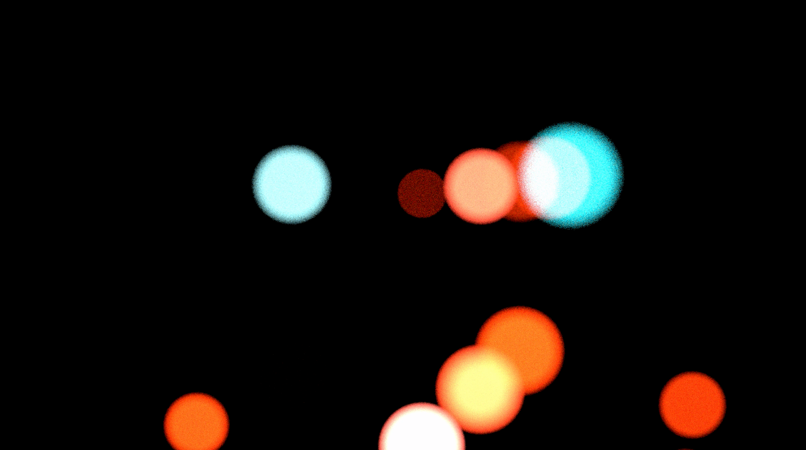

This music video was a collaboration with my friend Bryan Konietzko for his music project Ginormous. It began with a visual comp Bryan sent me with these dramatic tonality shifts throughout the major acts of the piece. Bryan had liked some of the Metal explorations I'd done and I decided that I'd push that visual style even further using SideFX Houdini.
The piece, created over the course of several months, was achieved using a variety of volumetric tools and scripts in Houdini. The points of the volume come alive with explosive, fluid dynamics. Rendered in Octane at 1080p.